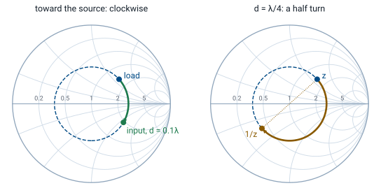

L11 - Smith Charts II#
Smith Charts II
Today we move along the line by turning around the chart.
Lesson 11 · Module 1: Foundations · Maj Ellis · Dr. Neil Rogers
Learning Objectives
- I can identify the various quantities represented on the Smith Chart.
- I can use the Smith Chart to solve transmission line problems.
Lesson 10 placed a load on the Smith chart and read its reflection coefficient and VSWR. A load alone is only the start of a transmission line problem. The questions that matter are what impedance the source sees at the far end of the line, where the voltage peaks, and what admittance a shunt element must cancel. Today we show that each of those answers comes from one move on the chart: a rotation around the load’s VSWR circle. We derive why the move is a rotation, derive the input impedance formula of Lesson 7 from it, and read admittances and voltage extremes off the same picture.
Where We Were
Lesson 6: Γ at a distance \(d\) from the load
Lesson 10: the chart is the Γ plane
We put the load at \(z = 0\) on the line and measure distance \(d = -z\) back toward the source. Lesson 6 showed that the ratio of the reflected wave to the incident wave at that point is the load’s reflection coefficient multiplied by \(e^{-j2\beta d}\): the incident wave travels \(d\) to reach the load and the reflected wave travels \(d\) back. Lesson 10 showed that every point of the \(\Gamma\) plane carries one normalized impedance. We now put the two results together.
Moving Toward the Source Is a Rotation
Magnitude fixed: stay on the VSWR circle.
Phase falls by \(2\beta d\): turn clockwise.
One full turn: \(2\beta d = 2\pi\), so \(d = \lambda/2\).
Writing \(\Gamma_L\) in polar form shows what the factor \(e^{-j2\beta d}\) does. It leaves the magnitude alone, so the point stays on the circle of constant \(\vert\Gamma\vert\) that Lesson 10 called the VSWR circle; on a lossless line the VSWR is the same everywhere. It subtracts \(2\beta d\) from the angle, and a falling angle is a clockwise turn. A full turn needs \(2\beta d = 2\pi\), which is \(d = \lambda/2\), so the impedance on any lossless line repeats every half wavelength. Moving toward the source, or generator, is clockwise; moving toward the load is counterclockwise.
The Input Impedance on the Chart
The rotation gives the input impedance formula of Lesson 7 without the voltage and current waves. We substitute \(\Gamma(d)\) into the mapping from Lesson 10 and write \(\Gamma_L\) in terms of \(z_L\). Multiplying the numerator and denominator by \(\left(z_L + 1\right)e^{j\beta d}\) clears both fractions. We then group the terms with \(z_L\) and the terms without it and use \(e^{j\beta d} + e^{-j\beta d} = 2\cos\beta d\) and \(e^{j\beta d} - e^{-j\beta d} = j2\sin\beta d\). Dividing the top and bottom by \(2\cos\beta d\) gives the normalized form of Lesson 7’s result. The algebra and the rotation are the same calculation; the chart does it with a compass.
The Wavelength Scales
Outer rim: wavelengths toward generator (WTG), clockwise from the short.
Inner rim: wavelengths toward load, counterclockwise.
WTG reading of a point: \(\dfrac{180^\circ - \theta_\Gamma}{720^\circ}\lambda\).
Move \(d\): add \(d\) to the WTG reading.
The printed chart carries two scales around its rim so that nobody has to convert angles by hand. The outer one, wavelengths toward generator, starts at zero at the short circuit on the left edge and counts clockwise to \(0.5\lambda\) in one full turn. Because \(720^\circ\) of \(\Gamma\) phase is one wavelength of travel, a point at angle \(\theta_\Gamma\) reads \((180^\circ - \theta_\Gamma)/720^\circ\) wavelengths on that scale. To move a distance \(d\) toward the source, we draw a ray from the center through the load, read its WTG value, add \(d\), and draw a second ray at the new value. The input impedance is where that ray crosses the VSWR circle.
Worked Example: Input Impedance

Worked example — 0.1λ of line
The load \(Z_L = 75 + j60\ \Omega\) from Lesson 10 sits at the end of \(0.1\lambda\) of \(50\ \Omega\) line. On the chart, \(z_L = 1.5 + j1.2\) has \(\Gamma_L = 0.469\angle 41.7^\circ\), which reads \(0.192\lambda\) on the WTG scale. Moving \(0.1\lambda\) toward the generator puts the ray at \(0.292\lambda\), a turn of \(2\beta d = 72^\circ\) clockwise, to \(\Gamma = 0.469\angle -30.3^\circ\). The grid at that point reads \(z_{in} = 1.90 - j1.15\), so \(Z_{in} = 95.2 - j57.6\ \Omega\). The formula from the previous frame, with \(\tan\beta d = \tan 36^\circ = 0.727\), gives the same value. A short piece of line turned an inductive load into a capacitive input.
A Quarter Wavelength Inverts the Impedance
\(d = \lambda/4\): half a turn, \(\Gamma \to -\Gamma\).
A quarter wavelength is half a turn, so it carries \(\Gamma_L\) to the point diametrically opposite, \(-\Gamma_L\). Substituting \(-\Gamma_L\) into the mapping flips the fraction, so the normalized input impedance is the reciprocal of the normalized load. Undoing the normalization gives \(Z_{in} = Z_0^2/Z_L\), the quarter-wave transformer of Lesson 8. The right panel of the worked example figure shows it: half a turn from \(z_L = 1.5 + j1.2\) lands on \(1/z_L = 0.407 - j0.325\).
Reading Admittance
\(y = g + jb\) sits at \(-\Gamma\), read on the same grid.
\(z_L = 1.5 + j1.2 \;\Rightarrow\; y_L = 0.407 - j0.325\).
Shunt elements add as admittances, so Lessons 12 and 13 need \(y\) as often as \(z\). The normalized admittance \(y = Y/Y_0 = 1/z\) has conductance \(g\) and susceptance \(b\). Writing \(1/z\) in terms of \(\Gamma\) gives the same mapping as before with \(-\Gamma\) in place of \(\Gamma\). So we find \(y\) by reflecting the point through the center and reading the same grid, now labeled as \(g\) and \(b\); that is the quarter-wave half turn of the previous frame. On the grid used for admittance, the upper half holds capacitive susceptance and the lower half inductive, and the left edge is now the open circuit. Some charts print a second, mirrored grid for admittance; this course uses one grid and the reflection.
Voltage Maxima and Minima on the Chart
\(\vert V\vert\) max where \(\Gamma(d)\) is real and positive: right real axis, \(z = \text{VSWR}\).
\(\vert V\vert\) min where it is real and negative: left real axis, \(z = 1/\text{VSWR}\).
Example: \(d_{\max} = 0.058\lambda\), \(d_{\min} = 0.308\lambda\).
Lesson 6 wrote the voltage magnitude as \(\vert V\vert = \vert V_0^+\vert \vert 1 + \Gamma(d)\vert\). It is largest when \(\Gamma(d)\) points along the positive real axis, so the two terms add, and smallest when \(\Gamma(d)\) points the other way. On the chart, those are the two crossings of the VSWR circle with the real axis: the maximum at \(r = \text{VSWR}\) on the right and the minimum at \(r = 1/\text{VSWR}\) on the left, a quarter wavelength apart. For our load, the first maximum is the clockwise turn of \(41.7^\circ\), which is \(0.058\lambda\); on the WTG scale the right axis reads \(0.25\lambda\), and \(0.25 - 0.192 = 0.058\). The first minimum is \(0.25\lambda\) farther, where the impedance is \(0.362\), or \(18.1\ \Omega\).
Rotating on the Explorer
The explorer opens on today’s example, with the load moved \(0.1\lambda\) toward the generator. The green arc is the rotation, and the readout gives \(z_{in} = 1.90 - j1.15\). Drag \(d\) to \(0.25\lambda\) and the input lands on the amber point at \(-\Gamma_L\), which is the load admittance. Drag it to \(0.5\lambda\) and the input returns to the load. Change the load and confirm that a matched load, \(R_L = 50\ \Omega\) and \(X_L = 0\), never moves.
Summary
Symbol / idea |
What it is |
Number to remember |
|---|---|---|
\(\Gamma(d)\) |
Reflection coefficient \(d\) from the load |
\(\Gamma_L e^{-j2\beta d}\) |
Toward generator |
Clockwise on the VSWR circle |
one turn per \(\lambda/2\) |
\(z_{in}\) |
Input impedance, normalized |
\(\frac{z_L + j\tan\beta d}{1 + jz_L\tan\beta d}\) |
WTG scale |
Outer rim, zero at the short |
\(\frac{180^\circ - \theta_\Gamma}{720^\circ}\lambda\) |
Quarter wave |
Half a turn |
\(z_{in} = 1/z_L\) |
\(y = g + jb\) |
Normalized admittance |
at \(-\Gamma\) on the same grid |
\(\vert V\vert\) extremes |
Real-axis crossings |
max at \(r = \text{VSWR}\), min at \(1/\text{VSWR}\) |
Practice
Where This Is Going
Lesson 12: a length of line plus one series or shunt element moves any load to the center.
Lesson 13: the element becomes a shorted or open stub.
We can now move a load anywhere around its VSWR circle. That circle passes through the \(r = 1\) circle twice, and on the \(r = 1\) circle only a reactance separates the input from a match. Lesson 12 uses that fact to design matching networks with one capacitor or inductor, in series or in shunt, and shows how each element moves the point on the chart.
Before Lesson 12, finish the Smith chart walkthrough on the materials page, and bring a printed blank Smith chart to class.